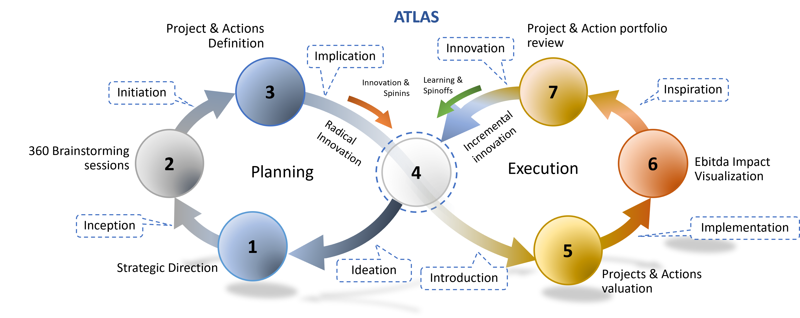

How ATLAS Runs
A Dual Clockspeed Approach
Planning and Execution are built to run at different speeds without ever losing alignment. The 5 Processes give ATLAS its steady, governed tempo — provided by structured, cross-functional review. The 7 Modules give it its fast tempo — the sequenced, hands-on steps through which ideas actually get delivered. Running both clocks side by side means the organisation can react quickly at the point of execution while strategy, KPIs, and funding decisions stay coherent at the process level — nobody has to choose between speed and governance.

The 5 Processes — Governed Tempo


The 7 Modules — Fast Tempo